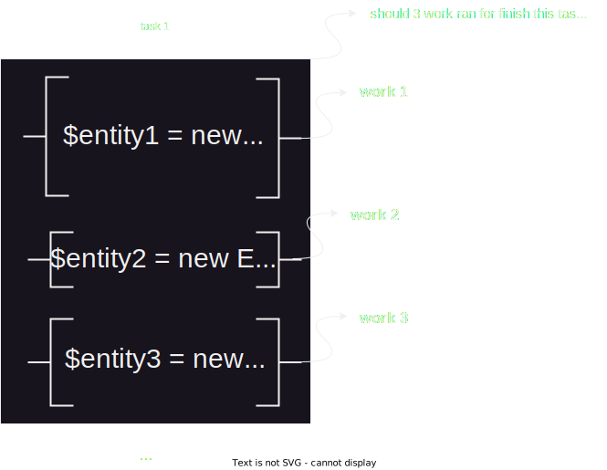
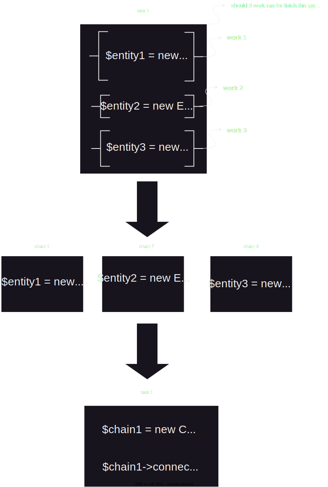

Chain Of Responsibility :
-
encapsulate کار هایی که باید برای انجام یک task ، پشت سر هم انجام شوند در unit های مجزا است
-
متصل کردن ان unit ها به یکدیگر در کد به صورت دانه های یک زنجیر ، به طوری که هر unit باید از unit بعدی خود که قرار است اجرا شود مطلع باشد و هر unit باید بتواند unit بعد از خودش را اجرا کند !!
-
برای انجام شدن یک task ، باید چندین کار ، به صورت پشت سر هم انجام شود و یا باید برای انجام ان task باید چندین handler پشت سرهم اجرا شود !!!
-
ما میخواهیم هر گاه که نیاز بود به صورت Dynamic کاری ویا handler ی را به ان زنجیره اضافه و یا کم کنیم !!!
مثلا برنامه نویس client ما نیاز دارد تا یک task را با استفاده از انجام شدن
چندین کار پشت سر هم انجام دهد اما برنامه نویس client باید
به ازای انجام هر کار در کد نهایی ، از یک موجودیت و method هایش استفاده کند :

ممکن است استفاده از هر موجودیت و متد هایش برای انجام یک کار ، در کد نهایی پیچیدگی هایی را به همراه داشته باشد و ما نمیخواهیم برنامه نویس client ما درگیر ان پیچیدگی ها شود و همچنین کد نهایی ما پیچیده و شلوغ و کثیف شود !!!
در اینجا برای حل این مشکل میتوانیم از دیزاین پترن chain of responsibility استفاده کنیم به این صورت که این design pattern ما را محبور میکند تا هر کاری را که بواسطه استفاده از یک موجودیت و متد هایش برای انجام ان task در کدنهایی انجام داده ایم را در یک unit مجزا encapsulate کنیم و این امکان را به ان unit بدهیم که بتواند در کد نهایی به یک unit دیگر از جنس خودش متصل شود !!!
اینطوری پیچیدگی انجام هر کار در unit های مجزا encapsulate ، و از چشم برنامه نویس client مخفی میشود و دیگر لازم نیست برنامه نویس client با پیچیدگی انجام هر کار درگیر شود و همچنین با متصل شدن ان unit ها به یکدیگر در کدنهایی مثل یک زنجیر ، به برنامه نویس کلاینت این گارانتی داده میشود که آن کار ها حتما پشت سر هم انجام میشوند و بین انها هیچ وقفه ای برای انجام کار دیگری و یا .... نیوفتد و بعلاوه به برنامه نویس client این گارانتی داده میشود که بتواند به صورت Dynamic هر گاه که نیاز داشت کار و یا handler ای را به ان زنجیره اضافه و یا کم کند !!! و در نتیجه بواسطه این design pattern کد نهایی ما تمیز و ساده و خوانا میشود !!!
نکات تکمیلی :
-
تفاوت Chain Of Responsibility با command :
زمانی از دیزاین پترن command استفاده میشود که برای انجام یک task فقط با یک موجودیت و method هایش سروکار داشته باشیم !!!
اما زمانی از دیزاین پترن chain of responsibility استفاده میکنیم که برای انجام یک task با چندین موجودیت و method هایشان درگیر باشیم !!!از موجودیت های command میتوان درون chain of responsibility استفاده کرد !!!

-
تفاوت Observer با Chain Of Responsibility :
-
دیزاین پترن Chain Of Responsibility زمانی استفاده میشود که ما برای انجام یک task باید چندین کار مختلف را پشت سر هم انجام دهیم و این design pattern آن کار ها را در unit های مختلف برای ما Encapsulate میکند
اما از دیزاین پترن observer زمانی استفاده میکنیم که میخواهیم پس از رخ دادن یک Event و یا پس از انجام شدن یک کار Unit ها و یا Listener هایی اجرا شوند و از رخ دادن آن Event و یا از انجام شدن آن کار مطلع شوند !!!
-
در دیزاین پترن Observer یونیت ها و یا Listener هایی که باید پس از رخ دادن یک Event و یا پس از انجام یک کار اجرا شوند ، توسط یک unit اجرا میشوند و یک unit مسعولیت اجرای انها را بر عهده میگیرد و هیچ یک از انها از unit و یا Listener بعد از خودش خبر ندارد همچنین آن unit است که از آن Listener و یا unit هایی که قرار است اجرا شود خبر دارد و مطلع است و همچنین ان unit است که ان Listener و یا ان unit ها را از رخ دادن آن Event و یا انجام شدن ان کار خبر دارد و مطلع میکند !!!
اما در دیزاین پترن Chain Of Responsibility به صورت پیشفرض هیچ Unit ای وجود ندارد که Chain ها را اجرا کند و این Chain ها هستند که همدیگر را به صورت پشت سر هم اجرا میکنند به این صورت که هر Chain از Chain بعد از خودش خبر دارد و پس از به اتمام رسیدن کار خودش Chain ای که قرار است بعد از خودش اجرا شود را اجرا میکند !!!!
-
در دیزاین پترن Chain Of Responsibility عموما کاری که در هر chain انجام میشود باید به درستی انجام شود تا آن chain به سراغ اجرای chain بعدی برود و اگر در یکی از chain ها انجام ان کار به درستی انجام نشود و حتی اگر در ان chain عملیات return و یا throw اتفاق بیوفتد و باعث شود تا interpreter از آن chain بیرون بپرد ، عموما آن Chain دیگر به سراغ اجرای Chain بعدی نمیرود
زیرا در chain of responsibility هر chain زمانیکه کارش با موفقیت انجام بشود و interpreter بواسطه دستور return و یا throw از ان chain خارج نشود chain بعد از خودش را اجرا میکند و در این design pattern اجرای هر chain وابسته به موفق اجرا شدن chain قبلی و بیرون نپریدن interpreter از ان chain میباشد !!!
اما در دیزاین پترن observer اگر کاری که در یکی از Listener ها انجام میشود به هر دلیلی انجام نشد observer یونیت و یا Listener بعدی را اجرا میکند و اجرای آن Listener ها و یا آن unit ها هیچ وابستگی بهم ندارند !!!
-
در دیزاین پترن chain of responsibility عموما هر chain به یک chain دیگر وابسته میباشد اما در دیزاین پترن observer یونیت ها و یا Listener های ما هیچ وابستگی بهم ندارند
هرگاه که نیاز بود از دیزاین پترن Observer میتوانیم درون دیزاین پترن Chain Of Responsibility استفاده کنیم و همچنین هر گاه که نیاز بود از دیزاین پترن Chain Of Responsibility میتوانیم درون دیزاین پترن Observer استفاده کنیم !!!
-
Command:
هدف این دیزاین پترن encapsulate درخواست ای که برای انجام یک task به یک Entity ارسال میشود در یک unit مجزا میباشد
در جایی استفاده میشود که برای انجام یک task باید متد هایی از یک کلاس ، پشت سر هم صدا زده بشود
مثلا برنامه نویس client ما میخواهد یک task ای را انجام دهد و برای انجام ان task نیاز دارد تا چندین Method را از یک موجودیت به صورت پشت سر هم صدا بزند اما اینکار باعث میشود برنامه نویس client ما برای انجام ان task با آن موجودیت و متد هایش درگیر شود و همچنین اگر برنامه نویس client ما متد های زیادی را از ان موجودیت برای انجام ان task پشت سر هم صدا بزند ، کد نهایی ما پیچیده و شلوغ و کثیف میشود !!!
برای حل این مشکل میتوانیم از دیزاین پترن command استفاده کنیم به این صورت که این design pattern مارا مجبور میکند تا متد هایی را که از ان موجودیت برای انجام ان task پشت سر هم صدا زده ایم را در یک unit مجزا encapsulate کنیم
اینطوری برنامه نویس client ما برای انجام ان task درگیر استفاده از چندین method از یک موجودیت نمیشود زیرا بواسطه دیزاین پترن command میتواند با صدا زدن یک method از یونیت command ، ان task را انجام دهد و همچنین استفاده از دیزاین پترن command باعث شده که کد نهایی ما شلوغ ، پیچیده ، و کثیف نشود !!!
نکات تکمیلی :
- این design pattern موجودیت هایی را ایجاد میکند که کار ان موجودیت ها انجام یک درخواست با استفاده از یک unit است !!!
- این design pattern زمانی مفید واقع میشود که یک تسک باید به واسطه متد های یک موجودیت انجام شود
-
تفاوت دیزاین پترن command با Facade :
command برای یک کلاس اما facade میتواند برای چندین کلاس باشد و شاید متدی داشته باشد که از متد های چندین کلاس برای انجام یک کار استفاده کند !!!! اما هر command دارای فقط یک متد و فقط برای انجام یک کار یا درخواست از یک موجودیت استفاده میشود اما یک کلاس Facade میتواند چندین کار را انجام دهد و چندین متد داشته باشد!!! - میتوانیم command هایی ایجاد کنیم و به عنوان callBack بدهیم به ابجکت ها تا هر موقع نیاز بود ان کامنتد ها را اجرا کنند مثلا دو کامند success , fail میسازیم و ان دو را پاس میدهیم به یک ابجکت حالا ان ابجکت هر موقع که یک کاری با موفقیت انجام داد به ابجکت کامند success درخواست میدهد تا اجرا شود اما اگر انجام ان کار Fail شد به کامند Fail درخواست میدهد تا اجرا شود !!!
-
این design pattern اصل single responsibility را برای متد هایمان مهیا میسازد یعنی هر متد باید یک کار انجام دهد و اگر متدی در ان کلاس داریم که باید بواسطه متد های دیگر ان کلاس ، یک کاری را انجام داده آن متد اصل single responsibility را نقض کرده !!!
با استفاده از دیزاین پترن command میتوانیم این مشکل را حل کنیم و در هیچ کلاسی متدی نداشته باشیم که بواسطه متد های دیگر از همان کلاس کاری را انجام دهد !!!
-
میتوانیم در یک موجودیت command ، چندین متد helper داشته باشیم که هر یک از آنها ، متد هایی را از ابجکت اصلی پشت سر هم صدا میزنند !!!
سپس در زمانیکه متدی از موجودیت command برای انجام درخواست اجرا شد میتوانیم ان متد های helper را در ان متد صدا بزنیم !!!
Interpreter:
هدف این دیزاین پترن Parse کردن یک String ساختارمند ، و تبدیل Segment های ان String ساختارمند به object میباشد
این design pattern در جایی استفاده میشود که بخواهیم یک string ساختارمند را parse کنیم و در مواقعی هر segment انرا به ابجکت تبدیل کنیم !!!
مثلا برنامه نویس Client ما میخواهد یک String ساختارمند را از ورودی بگیرد و انرا را در کد نهایی parse و تجزیه و تحلیل کند و سپس هر Segment از ان String ساختارمند را میخواهد تبدیل به یک object بکند !!!
اما پردازش ان string ساختارمند و ایجاد object برای هر segment از ان string ساختار مند ، در کد نهایی ، ممکن است کاری پیچیده و سخت برای برنامه نویس client باشد و قطعا انجام این دو عملیات کد نهایی ما را شلوغ ، پیچیده و کثیف خواهد کرد !!!
برای اینکه ان string ساختارمند parse شود و ابجکت هایی به ازای هر segment ان string ساختارمند ایجاد شود و سپس در صورت لزوم ان ابجکت ها به برنامه نویس کلاینت تحویل داده شود میتوانیم از دیزاین پترن interpreter استفاده کنیم !!!
اینطوری پیچیدگی عملیات parse ، ان string ساختارمند و همچنین پیچیدگی عملیات تبدیل هر segment از ان string ساختارمند ، به object از چشم برنامه نویس client مخفی میشود و در نهایت این باعث میشود کد نهایی ما دیگر شلوغ و کثیف و پیچیده نشود !!!
درک عمیق تر :
-
به طور مثال میخاهیم اطلاعات user ها را از یک فایل csv دریافت کنیم و به object تبدیل کنیم !!! :
میتوانیم برای انجام این کار از دیزاین پترن interpreter استفاده کنیم ، و parse ان فایل csv و همچنین ایجاد object به ازای هر record از ان فایل csv را برعهده دیزاین پترن Interpreter بسپاریم!!!
اینطوری برنامه نویس client ما درگیر parse آن فایل csv و درگیر پیچیدگی هایش نمیشود و همچنین درگیر ساخت object و پیچیدگی هایش از کلاس user به ازای هر record از ان فایل csv نمیشود !!!
ممکنه در ان فایل csv رکورد های تکراری وجود داشته باشد یعنی ممکن است اطلاعات یک فرد دو بار در ان فایل موجود باشد برای حل این مشکل و جلوگیری از ساخت object های تکراری در سیستم میتوانیم از دیزاین پترن flyWeight در interpreter استفاده کنیم !!!
-
میتوانیم از این design pattern برای انجام عملیات form Validation استفاده کنیم !!! :
به این صورت که rule ها را از برنامه نویس client به صورت یک string ساختارمند و معنا دار میگیریم و سپس بواسطه دیزاین پترن Interpreter ان string ساختار مند و معنا دار را parse میکنیم و بعد آن rule هایی که درون ان string ساختارمند و معنا دار هست را تبدیل به object میکنیم و بعد میتوانیم فورم و ورودی برنامه نویس client را به راحتی validate کنیم و یا میتوانیم آن rule object ها را تحویل برنامه نویس بدهیم !!!
اینطوری به جای اینکه برنامه نویس client خودش به صورت دستی از هر rule یک ابجکت بسازد و با class و object هر rule درگیر شود میتواند با دادن یک string معنا دار به کلاس interpreter ورودی خود را validation کند و همچنین در صورت لوزوم میتواند به ابجکت rule مورد نظر خود دسترسی پیدا کند !!!
در اینجا میتوانیم از دیزاین پترن factory برای ساخت rule object ها در interpreter استفاده کنیم !!!
-
مثال Parse-> Json در Javascript و مثال uniserialize -> serialize query string در php :
مثلا زمانی که JavaScript یک متن Json را میخواهد parse کند جاوا اسکریپت ان Json String را به این Design pattern میدهد حالا این دیزاین پترن ان Json String را تجزیه میکند و سپس به Object تبدیل میکند !!!
ویا زمانیکه php میخواهد یک serialize query string را unserialize کند ، php ان serialize query string را به این design pattern میدهد و سپس این دیزاین پترن آن serialize query string را تحلیل و تجزیه میکند و بعد با توجه به ان تحلیل و تجزیه serialize query string یک object تحویل ما میدهد !!!
Iterator:
هدف این دیزاین پترن encapsualte عملیات iterate بر روی یک iterable در Unit مجزا میباشد !!!
این design pattern در جایی استفاده میشود که عملیات iterate وجود داشته باشد و یا iterate بر روی یک iterable پیچیده و سخت باشد و ما میخواهیم پیچیدگی iterate بروی ان iterable را از چشم برنامه نویس client مخفی کنیم !!!
مثلا برنامه نویس client در کدنهایی میخواهد بر روی یک iterable عملیات iterate انجام دهد ، اما ممکن است انجام عملیات iterate بر روی ان iterable برای برنامه نویس client کاری پیچیده و سخت باشد و همچنین کد نهایی ما را پیچیده و کثیف بکند !!!
برای حل این مشکل با استفاده از دیزاین پترن Iterator میتوانیم پیچیدگی iterate بر روی یک iterable را در یک unit مجزا Encapsulate و از چشم برنامه نویس نهایی مخفی کنیم !!!
اینطوری برنامه نویس client ما با استفاده از یک object و یا یک کلاس iterator میتواند بر روی آن iterable عملیات iterate را به سادگی و بدون درگیر شدن با پیچیدگی های آن انجام دهد و همچنین استفاده از این دیزاین پترن باعث میشود کد نهایی ما شلوغ و پیچیده و کثیف نشود
نکات تکمیلی :
- این دیزاین پترن پیچیدگی iterate بر روی یک iterable را در یک unit مجزا Encapsulate میکند !!!
Mediator:
هدف این دیزاین پترن ایجاد یک راه برای interact و communication آبجکت ها با یکدیگر ، بدون داشتن رابطه با هم میباشد !!!
این design pattern در جایی استفاده میشود که چندین object باید همدیگر را بشناسند و بهم اشراف داشته باشند و با هم رابطه داشته باشند و یکدیگر را در خود compose کنند تا بتوانند با هم interact و communication کنند !!!
مثلا برنامه نویس client ما در کد نهایی ، object هایی دارد که انها برای interact و Communication کردن با هم ، باید یکدیگر را بشناسند و به هم اشراف داشته باشند !!!
اما شناساندن همه ی object ها به یکدیگر در کدنهایی ، ممکن است کاری پیچیده ، سخت ، هزینه بر و زمانبر باشد و برنامه نویس client ما را درگیر پیچیدگی ایجاد روابط بین object ها بکند و همچنین قطعا انجام این کار ، کدنهایی ما را شلوغ و پیچیده و کثیف میکند !!!
برای حل این مشکلات ما میتوانیم از دیزاین پترن Mediator استفاده کنیم و مسعولیت communicate و interact آن آبجکت ها با یکدیگر را برعهده mediator بسپاریم سپس این design pattern ما را مجبور میکند تا به جای اینکه object هایی را که میخواهند با هم interact و communication کنند را به همدیگر بشناسانیم و معرفی کنیم ، آنها را فقط به mediator بشناسانیم و معرفی کنیم !!!
حالا بواسطه دیزاین پترن mediator آن object هایی که میخواهند با هم communicate و interact کنند ، فقط با شناخت mediator و معرفی شدن به mediator میتوانند با یکدیگر communicate و interact کنند !!!
به این صورت که درخواست خود را به mediator میدهند و چون mediator به همه object ها اشراف دارد و همه ی object ها را میشناسد و با همه object ها ارتباط دارد آن درخواست را تحویل object مورد نظر میدهد !!!
بواسطه دیزاین پترن mediator روابط و چسبندگی بین object هایی که میخواهند با هم communicate و interact کنند ، حذف میشود و یا کاهش پیدا میکند به این صورت که دیگر لازم نیست آن object ها برای communicate و interact باهم ، یکدیگر را بشناسند و با هم رابطه داشته باشند و فقط با شناخت و داشتن رابطه با mediator ، میتوانند با هم communicate و interact کنند
که این باعث شده تا برنامه نویس client ما دیگر در گیر پیچیدگی ایجاد روابط بین ان object ها و شناساندن ان object ها به یکدیگر نشود و در نتیجه استفاده از mediator باعث میشود که کد نهایی ما شلوغ کثیف و پیچیده نشود !!!
نکات تکمیلی :
- این design pattern یک unit به منظور Encapsulate کردن روابط بین object ها ایجاد میکند !!!
- این design pattern روابط بین object ها را برای ما کاهش میدهد
-
برای درک بهتر این design pattern چند client را در نظر بگیرید که میخواهند با هم گفت و گو کنند و بهم پیام ارسال کنند اما برای گفت و گو آن client ها باید از هم خبر داشته باشند و یکدیگر را بشناسند و با هم رابطه داشته باشند تا بتوانند بهم پیام بدهند !!!
اما این کار معقولانه نیست که client ها یکدیگر را بشناسند و از هم خبر داشته باشند و باهم رابطه داشته باشند تا بتوانند بهم پیام بدهند !!!
برای حل این مشکل ، client ها میتوانند خودشان را به یک mediator که در این مثال mediator ما server است register کنند و از mediator و یا همان server بخواهند تا به client مورد نظرشان پیام را ارسال بکند اینطوری دیگر نیاز نیست client ها برای ارسال پیام بهم ، یکدیگر را بشناسند و از هم با خبر باشند !!!
میبینیم که معماری کلاینت سروری درست شبیه به این design pattern میباشد و همچنین messanger ها هم از این معماری استفاده میکنند !!!!
Memento:
هدف این دیزاین پترن Track تغییراتی است که بر روی یک Unit و داده هایش اعمال میشود و همچنین تولید snapShot و image از ان تغییرات و سپس فراهم کردن امکان restore آن unit به تغییرات و snapShot های قبلی میباشد !!!
این design pattern در جایی استفاده میشود که یک object و داده هایش داعما در حال تغییر و تحول باشند و ما میخواهیم ان تغییرات را track کنیم و از روی هر تغییر یک SnapShot برداریم و هر تغییر را save کنیم تا بتوانیم در آینده و یا هر موقع که نیاز بود تغییرات قبلی را بر روی آن object بواسطه snapShot ها ، اعمال کنیم و ان object را به تغییرات قبلی و گذشته restore کنیم !!!
مثلا برنامه نویس client ما در کدنهایی object ای دارد که دیتا های ان object زیاد تغییر میکند و برنامه نویس client ما باید هر از گاهی دیتا های ان object را تغییر دهد اما در بعضی از موارد ممکن است تغییراتی که بر روی دیتاهای ان object اعمال میکند ، تغییرات تکراری ای باشد که در گذشته بر روی دیتاهای ان object اعمال کرده و چون آن تغییرات را در جایی save نکرده و یا از روی ان تغییرات snap shot ای بر نداشته مجددا برنامه نویس client ما باید از اول تغییرات تکراری گذشته را بر روی دیتاهای ان object اعمال کند !!!
برای اینکه بتوانیم تغییراتی که بر روی یک object اعمال میشود را ذخیره کنیم و track کنیم و از هر تغییر بتوانیم یک snapShot برداریم تا در صورت لزوم بتوانیم آن object را به تغییرات گذشته و به قبل برگردانیم باید از دیزاین پترن Memento استفاده کنیم
به این صورت که این design pattern مارا مجبور میکند تا کاری کنیم که بتوان از ان آبجکت snapShot و یا image تهیه کرد و همچنین بتوان یک snapShot و یا یک image را بر روی آن آبجکت restore کرد و یا ان object را بواسطه یک image و یا snapShot به تغییرات گذشته برگرداند !!!
بواسطه دیزاین پترن Memento برنامه نویس client میتواند از هر تغییری که بر روی یک object اعمال میشود یک snapShot تهیه کند و هر موقع که نیاز بود آن object را به تغییرات قبل و یا به snapShot های قبلی برگرداند همچنین دیگر نیاز نیست برنامه نویس client ما برای برگرداندن دیتاهای یک object به قبل آن دیتاها را از اول برای ان object به صورت دستی set کند و فقط با داشتن snapShot میتواند به راحتی آن object را به قبل برگرداند !!!
اینطوری کار برنامه نویس client ما راحت شده و دیگر نیاز نیست وقتش را برای برگرداندن دیتاهای یک object به گذشته و set کردن دیتا های ان object از اول به صورت دستی تلف کند !!!
نکات تکمیلی:
-
تفاوت memento با Prototype :
-
بواسطه memento از object ای که دیتاهایش داعما در حال تغییر میباشد در هر مرحله میتوان یک snapShot و یا یک clone و یا یک backup گرفت و سپس هر موقع که نیاز بود میتوان ان snapShot یا clone و یا backup را بر روی ان object برگرداند و restore ویا revert کرد !!!
-
اما بواسطه prototype فقط میتوانیم از object موردنظرمان یک clone بگیریم و prototype این وظیفه را ندارد تا آن clone را بر روی object اصلی restore کند !!! اگر object اصلی تغییری کرد clone ای را که از ان گرفته را بر روی object اصلی restore کند زیرا وظیفه ی prototype فقط گرفتن clone از یک object میباشد !!!
-
-
پس هدف دیزاین پترن Memento ایجاد یک راهکار برای ذخیره تغییراتی که بر روی یک object اعمال میشود به صورت snap shot و سپس فراهم کردن امکان بازگشت ان تغییرات اعمال شده به ان object به قبل میباشد !!!
-
در صورتیکه برای گرفتن snapShot از object موردنظرمان نیاز بود تا انرا clone کنیم میتوانیم از دیزاین پترن Prototype برای clone کردن استفاده کنم !!!
-
این دیزاین پترن backup گرفتن از یک object و همچنین restore ان backup ها بر روی ان object را برای ما محقق ساخته !!!
-
کتابخانه ReactJs برای ذخیره state کامپوننت هایش و برای اینکه تغییر state یک component را متوجه شود و کامپوننت را ReRender کند و برای اینکه به ما تفاوت state را قبل از تغییر و بعد از تغییر نشان دهد از دیزاین پترن Memento استفاده میکند !!!
-
سیستم مدیریت محتوای Wordpress از دیزاین پترن Memento استفاده میکند تا بتواند از تغییراتی که بر روی یک Article اعمال میشود را Track بکند و از هر تغییر یک SnapShot تهیه بکند تا در صورت نیاز به کاربر بتواند history تغییرات را نشان بدهد و یا آن article را به تغییرات قبلی برگرداند !!!
Observer:
هدف این design pattern ایجاد یک unit به منظور اجرا کردن unit هایی که از یک ساختار standard و یا از یک contract پیروی میکنند ، پس از اتفاق افتادن یک Event و یا بعد از انجام شدن یک کار میباشد !!!
این Design Pattern در جایی استفاده میشود که پس از اتفاق افتادن یک Event و یا بعد از انجام یک کار باید unit ها و یا Listener هایی اجرا شوند و از ان اتفاق رخ داده و یا از انجام ان کار خبر دار شوند !!!
مثلا برنامه نویس client ما در کدنهایی میخواهد پس از انجام یک کار و یا پس از اتفاق افتادن یک Event ، یونیت ها و یا listener هایی را اجرا کند و آنها را از اتفاق افتادن ان event و یا از انجام آن کار خبر دار کند اما انجام این کار برنامه نویس client ما را درگیر اجرا و instantiate از Unit و listener های مختلفی میکند و انجام این کار ممکن است کد نهایی ما را شلوغ ، کثیف و پیچیده بکند
و همچنین درصورتیکه ان unit ها و یا ان listener ها از هیچ ساختار standard و یا از هیچ contract ای پیروی و تبعیت نمیکردند و هر یک از آنها ساختار منحصر به فرد و ساختار خاص خودش را داشت ، ممکن است instantiate و اجرای آنها برای برنامه نویس client ما به دلیل نداشتن اشراف و مسلط نبودن به ساختار آنها ، کاری سخت و دشوار باشد و انرا درگیر پیچیدگی instantiate و اجرای هر unit و یا هر Listener بکند !!!
برای حل این مشکل میتوانیم از دیزاین پترن Observer استفاده کنیم به این صورت که این Design pattern ابتدا مارا مجبور میکند تا یک ساختار standard برای آن unit ها و یا ان Listener هایی که باید پس از انجام یک کار و یا اتفاق افتادن یک Event اجرا شوند بسازیم و کاری کنیم که ان unit ها و یا آن listener ها از یک ساختار standard پیروی بکنند
سپس این design pattern ما را مجبور میکند تا یک unit بسازیم و ان Listener و یا آن unit ها را در ان register کنیم و بعد در ان unit باید کاری کنیم که وقتی ان اتفاق مورد نظرمان رخ داد و یا ان کار انجام شد آن unit ها و یا ان listener ها اجرا شوند و از اتفاق افتادن ان event و یا انجام شدن آن کار مطلع و با خبر شوند !!!
حالا بواسطه دیزاین پترن Observer دیگر نیاز نیست برنامه نویس Client ما در کد نهایی با آن Unit و یا با آن Listener هایی که میخواهد پس از رخ دادن یک Event و یا پس از انجام یک کار ، اجرا شوند سروکار داشته باشد و با Structure مختلف هر یک از آنها درگیر شود و تنها با ایجاد یک Structure و یا یک standard مشترک بین آن Listener و یا Unit ها و معرفی کردن آنها به observer میتواند آن unit ها و یا ان Listener ها را در هر زمان که نیاز بود ، به راحتی و فقط با درگیر شدن و سروکار داشتن با observer اجرا کند !!!
اینطوری کد نهایی ما کمتر شلوغ ،کثیف و پیچیده میشود و همچنین این دیزاین پترن باعث میشود که دیگر اجرای آن unit و یا آن listener ها برای برنامه نویس client ما ، کاری سخت و پیچیده نباشد و همچنین برنامه نویس client ما هرگاه که نیاز بود میتواند به راحتی Listener و یا unit جدیدی را به صورت Dynamic اضافه کند و آنرا در Observer ثبت کند تا observer پس از اینکه ان Event رخ داد و یا پس از اینکه ان کار انجام شد آن Listener و یا unit را اجرا کند !!!
نکات تکمیلی :
-
تفاوت Observer با Chain Of Responsibility :
-
دیزاین پترن Chain Of Responsibility زمانی استفاده میشود که ما برای انجام یک task باید چندین کار مختلف را پشت سر هم انجام دهیم و این design pattern آن کار ها را در unit های مختلف برای ما Encapsulate میکند
اما از دیزاین پترن observer زمانی استفاده میکنیم که میخواهیم پس از رخ دادن یک Event و یا پس از انجام شدن یک کار Unit ها و یا Listener هایی اجرا شوند و از رخ دادن آن Event و یا از انجام شدن آن کار مطلع شوند !!!
-
در دیزاین پترن Observer یونیت ها و یا Listener هایی که باید پس از رخ دادن یک Event و یا پس از انجام یک کار اجرا شوند ، توسط یک unit اجرا میشوند و یک unit مسعولیت اجرای انها را بر عهده میگیرد و هیچ یک از انها از unit و یا Listener بعد از خودش خبر ندارد همچنین آن unit است که از آن Listener و یا unit هایی که قرار است اجرا شود خبر دارد و مطلع است و همچنین ان unit است که ان Listener و یا ان unit ها را از رخ دادن آن Event و یا انجام شدن ان کار خبر دارد و مطلع میکند !!!
اما در دیزاین پترن Chain Of Responsibility به صورت پیشفرض هیچ Unit ای وجود ندارد که Chain ها را اجرا کند و این Chain ها هستند که همدیگر را به صورت پشت سر هم اجرا میکنند به این صورت که هر Chain از Chain بعد از خودش خبر دارد و پس از به اتمام رسیدن کار خودش Chain ای که قرار است بعد از خودش اجرا شود را اجرا میکند !!!!
-
در دیزاین پترن Chain Of Responsibility عموما کاری که در هر chain انجام میشود باید به درستی انجام شود تا آن chain به سراغ اجرای chain بعدی برود و اگر در یکی از chain ها انجام ان کار به درستی انجام نشود و حتی اگر در ان chain عملیات return و یا throw اتفاق بیوفتد و باعث شود تا interpreter از آن chain بیرون بپرد ، عموما آن Chain دیگر به سراغ اجرای Chain بعدی نمیرود
زیرا در chain of responsibility هر chain زمانیکه کارش با موفقیت انجام بشود و interpreter بواسطه دستور return و یا throw از ان chain خارج نشود chain بعد از خودش را اجرا میکند و در این design pattern اجرای هر chain وابسته به موفق اجرا شدن chain قبلی و بیرون نپریدن interpreter از ان chain میباشد !!!
اما در دیزاین پترن observer اگر کاری که در یکی از Listener ها انجام میشود به هر دلیلی انجام نشد observer یونیت و یا Listener بعدی را اجرا میکند و اجرای آن Listener ها و یا آن unit ها هیچ وابستگی بهم ندارند !!!
-
در دیزاین پترن chain of responsibility عموما هر chain به یک chain دیگر وابسته میباشد اما در دیزاین پترن observer یونیت ها و یا Listener های ما هیچ وابستگی بهم ندارند
هرگاه که نیاز بود از دیزاین پترن Observer میتوانیم درون دیزاین پترن Chain Of Responsibility استفاده کنیم و همچنین هر گاه که نیاز بود از دیزاین پترن Chain Of Responsibility میتوانیم درون دیزاین پترن Observer استفاده کنیم !!!
-
State:
مفاهیم قبل از شروع ->
-
مفهوم State :
state یعنی کلاس ما دارای property ای باشد که آن class به value های آن property حساس باشد و با توجه به value های ان property رفتارش تغییر کند و آن class با توجه به هر یک از value های ان property یک واکنش متفاوت از خودش بروز دهد !!!!
هدف این design pattern تبدیل state های یک کلاس به object های مجزا و همچنین انتقال method هایی که در آن class بر روی ان state و یا property عملیات انجام میدهند و یا آنرا manipulate میکنند ، از آن class نهایی به ان Object میباشد !!!
این design pattern در جایی استفاده میشود که یک class و یا آبجکت state های مختلفی داشته باشد و رفتار آن class با توجه به تغییر آن state عوض شود و همچنین method های مختلفی درون ان class برای manipulate و یا انجام عملیات بر روی آن state ایجاد شده باشد !!!!
مثلا در سیستم ، کلاسی میخواهیم ایجاد کنیم که دارای state های مختلفی باشد و رفتار ان class با توجه به تغییر ، state ها عوض شود و همچنین ما نیاز داریم در ان کلاس method هایی را برای انجام عملیات و manipulate بر روی ان state ایجاد کنیم اما انجام این کار باعث میشود :
-
اگر در آینده خواستیم حالت ها و یا state های جدیدی به آن class اضافه کنیم باید آن class را به صورت دستی تغییر بدهیم و آن state ها را به آن class و method هایش اضافه کنیم که این کار hard code است و باعث میشود دیگر class ما برا اضافه کردن state های جدید dynamic نباشد و یا به عبارتی دیگر این کار باعث میشود open/close principle در آن class اجرا نشود !!!
-
method های نامربوطی با توجه به وظیفه ی class مورد نظرما به آن اضافه شود و آن class دیگر single responsible نباشد و اصل تک مسعولیتی خود را از دست بدهد !!!
-
با اضافه شدن آن method های نامربوط به آن class باعث میشود method های زیادی در ان class وجود داشته باشد و ساختار آن class پیچیده شود و همچنین کد ان class نیز پیچیده ، شلوغ و کثیف شود و کار با ان class برای برنامه نویس client ما پیچیده ، سخت و دشوار شود !!!
برای حل این مشکلات میتوانیم از دیزاین پترن State استفاده کنیم به این صورت که این design pattern ما را مجبور میکند تا هر یک از ان state ها را یک object در نظر بگیریم و method هایی که در class نهایی وظیفه انجام عملیات بر روی آن و یا manipulate آنرا بر عهده داشتند را از آن class نهایی به آن object منتقل کنیم !!!
حالا برنامه نویس client ما وقتی میخواهد بر روی state آن class نهایی ، عملیاتی انجام دهد و یا آنرا manipulate کند ، به جای اینکه مستقیما method هایی را بر روی آن class و یا object نهایی call کند میتواند از آن object و یا class نهایی object آن state را تحویل بگیرد و آن method ها را بر روی ان object ای که تحویل گرفته call کند !!!
بواسطه این Design Pattern دیگر لازم نیست زمانیکه میخواهیم state های جدیدی را به آن class اضافه کنیم به صورت دستی و hard code این کار را انجام دهیم و با استفاده از این design pattern اضافه کردن state های جدید به آن class به صورت Dynamic انجام میشود و یا به عبارتی دیگر این design pattern باعث میشود open/close principle در ان class رعایت شود
و همچنین دیگر نیاز نیست برای انجام عملیات و یا manipulate بر روی یک state از یک class ، متد های بی ربط و خارج از وظیفه ی آن class ، درون آن class ایجاد کنیم و آن Method ها را درون object و یا class ای که برای state میسازیم ایجاد میکنیم که این کار باعث میشود آن class نهایی ما تک مسعولیتی و یا single responsible باقی بماند و ساختار آن class پیچیده نشود و همچنین کد آن class هم شلوغ ، پیچیده و کثیف نشود به علاوه استفاده از این design pattern باعث شده تا کار با آن class و object هایی که از روی ان ساخته میشوند برای برنامه نویس client ما پیچیده و دشوار نباشد !!!
Strategy:
هدف این design pattern تبدیل روش ها و الگوریتم های مختلف انجام یک کار به object های مجزا و یا به عبارتی دیگر encapsulate هر روش و یا هر الگوریتم در object های مجزا و همچنین ایجاد یک contract و یا standard کلی و عمومی بین آن object ها میباشد !!!
این design pattern در جایی استفاده میشود که روش ها و یا الگوریتم های مختلفی برای انجام یک کار وجود داشته باشد و در کد نهایی و یا در RunTime تعیین شود که از کدام الگوریتم و یا روش برای انجام آن کار باید استفاده بشود !!!
مثلا برای انجام یک کار روش ها و الگوریتم های مختلفی وجود دارد و ما در سیستم کلاسی داریم که آن کار را میتواند با روش و الگوریتم های مختلفی انجام دهد به این صورت که در آن class به ازای هر روش و یا الگوریتم ، یک Method ایجاد شده و برنامه نویس client ما روش و الگوریتم انجام ان کار را در کد نهایی و یا در runTime خودش انتخاب و تعیین میکند به این صورت که برای انجام آن کار در کد نهایی و یا RunTime از method ای استفاده میکند که آن کار را با روش و الگوریتم مورد انتظارش و مورد انتخابش انجام میدهد !!!
اما ممکن است ان class الگوریتم و یا روش مورد انتظار برنامه نویس client ما را برای انجام ان کار implement نکرده باشد و درون آن Class هیچ method ای وجود نداشته باشد که آن کار را با الگوریتم و روش مورد انتظار برنامه نویس Client ما انجام دهد در این صورت برنامه نویس Client ما باید آن Class را تغییر دهد و درونش یک Method جدید اضافه کند که آن کار را با الگوریتم و روش مورد انتظارش انجام دهد
اما این یک کار hardCode است و open/close principle در ان کلاس fail شده ، یعنی برنامه نویس client ما نمیتواند به صورت Dynamic الگوریتم و یا روش جدیدی را برای انجام ان کار به آن class بدون اعمال تغییر در آن ، اضافه کند همچنین ایجاد کردن Method در آن class به مرور زمان باعث میشود Method های آن class زیاد شوند و ساختار آن class به مرور زمان پیچیده و شلوغ شود و کد آن class هم شلوغ،پیچیده و کثیف شود و در نتیجه کار با ان class برای برنامه نویس client ما پیچیده و سخت و دشوار میشود !!!
برای حل این مشکلات میتوانیم از دیزاین پترن Strategy استفاده کنیم به این صورت که این Design Pattern ما را مجبور میکند تا ابتدا یک Standard و یا Contract مشترک بین روش ها و الگوریتم های مختلف انجام ان کار ایجاد کنیم و سپس ما را مجبور میکند تا هر یک از آن روش ها و الگوریتم های انجام ان کار را یک object در نظر بگیریم و هر یک از آنها را در یک کلاس Encapsulate کنیم در اخر ما را مجبور میکند تا کاری کنیم که ان object ها از ان contract و یا standard مشترک و واحد پیروی کنند!!!
حالا برنامه نویس client ما برای انجام دادن آن کار در کد نهایی با روش و الگوریتمی که انتخاب کرده ابتدا باید Object آن الگوریتم و یا روش را به ان کلاس Pass بدهد و از ان class بخواهد تا آن کار را با آن روش و یا الگوریتمی که به ان Pass داده شده انجام دهد !!!
بواسطه این Design Pattern هر روش و یا الگوریتمی که برای انجام آن کار در method های مجزای درون آن class وجود داشته باشد در class های مجزا Encapsulate خواهند شد و دیگر نیاز نیست برنامه نویس client ما برای انجام آن کار به روش و یا الگوریتم شخصی خودش به صورت دستی و hard code آن class را تغییر دهد و یک method جدید به آن اضافه کند
زیرا این design pattern باعث بهوجود امدن open/close principle در ان class شده و این امکان را به برنامه نویس client ما میدهد که به صورت Dynamic و بدون دادن هرگونه تغییری در ان class و یا در سیستم و فقط با ایجاد یک object مجزا و پیروی آن object از یک contract و یا standard ، بتواند برای انجام آن کار ، به سیستم و یا به آن class الگوریتم و یا روش مورد انتظار خودش را ایجاد کند
همچنین استفاده از این design pattern باعث شده که دیگر method های ان class زیاد نشود و ساختار ان class شلوغ و پیچیده نشود و در نتیجه کد آن class هم دیگر شلوغ ، پیچیده و کثیف نمیشود و کار با ان class برای برنامه نویس client ما پیچیده ، سخت و دشوار نمیشود !!!
نکات تکمیلی :
- بواسطه دیزاین پترن strategy میتوانیم رفتار و یا الگوریتم یک class را در runTime عوض کنیم و یا تغییر بدهیم !!!
- بواسطه دیزاین پترن Strategy برنامه نویس client ما الگوریتم و یا روش انجام آن کار را در کد نهایی و یا در RunTime تعیین و انتخاب میکند !!!
Template:
استاندارد سازی و ایجاد یک قالب و یک استاندارد کلی
Visitor:
هدف این design pattern